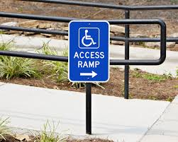

Our trip counselor will guide you how to best enjoy yourself and amuse your beloved ones
Tips for singles or divorced
This is our first tip: in case you are in search of your next love affair, please consider well
visited or crowded, but quiet places,
where the music is not so loud. That way communication is easier.
Tips for pairs and young parents
This is another tip for the active lovers: please select a discreet place for your accomodation and
keep it quiet, or just let the music play too!
Disneyland in Paris offers great possibilities for all ages
Tips for single parent or small families
This is another tip:cost cutting values most for single parent families.Therefore it is recommended
to search our ratings page
for user feedback concerning value for money comparisons.
Tips for larger families
This is another tip for multimember families: one needs to select special places, or venues, which
offer various activities for all members of the family,
such as ranging from museums, cinemas with playgrounds for children, to swimming, biking, hiking or
wandering in the land.
Tips for the elderly
This is another tip for the seniors in need of special medical attention. In case of emergency the
arrival time of an ambulance
will be long, depending on the season of the year and local weather. Please avoid isolated places
with limited access to pharmacies and physicians.
Special tips for specific guest groups!
Tips for nursuring your baby
This is another tip for young mothers: apart from Scandinavia, public breast feeding is not allowed
or
tolerated in most countries.
Although there are special rooms for nursuring your baby in big Malls, other public places miss that
feature. Always check beforehand
whether there is such a room available in the viccinity of the venue mentioned in the article.

Tips for the handicapped
This is our hottest tip for the disabled: note that the car or motorcycle drivers,
always seem to park the wrong way, blocking the ramps, if any available. Calling the traffic police
won't solve the problem either. Moving with
a wheelchair to our suggested destination is not always feasible.
Please check beforehand with your favorite way or app, whether the venue mentioned is really
accessible for the handicapped too. Not all public transport or stations provide a ramp for the
disabled.
Sometimes the portable ramps are misplaced and the staff does not know how to use them, or just does
not bother.
Plan timely and start earlier then early, taking into account such time waste and inconvenience!
Our leisure counselor will guide you how to best enjoy yourself and amuse your beloved ones
Tips for singles or divorced
Many of the upshots we discuss when we talk about the benefits of cycling are exercise related.
Reckon it might be easier to just go for a run?
Running is weight bearing – and therefore injury rates are higher. Cycling, by contrast to running,
is not weight bearing.
Cycling is an incredibly sociable sport. Grassroots cycling revolves around cycling club culture –
which in turn revolves around the Saturday or Sunday club run: several hours of riding at an
intensity that enables easy chat, interrupted only by a cafe stop (or the occasional puncture).
Joining a cycling club or group is an excellent way to grow your social circle, and if you’re new to
riding – you’ll probably find all the maintenance and training advice you may have been looking for
there, too.
Tips for pairs and young parents
Most of us know that sex is a good thing, but not everyone knows that it’s actually good for your
overall health. In fact, regular sex
could indeed prolong your life.
Dr Michael Roizen, who chairs the Wellness Institute at the Cleveland Clinic, says: “The typical man
who has 350 orgasms a year,
versus the national average of around a quarter of that, lives about four years longer.” Similar
findings were revealed for women.
So can cycling improve your sex life? Well – it builds some rather essential muscle groups.
Dr Matthew Forsyth, urologist and keen cyclist from Portland, Oregon, commented: “All these muscles
[worked on the bike] are used during intercourse.
The better developed these muscles, the longer and more athletic intercourse will be.”
Biking in the land is a healthy passtime for all ages
Tips for single parent or small families
This is another tip:cost cutting values most for single parent families.Therefore it is recommended
to search our ratings page
for user feedback concerning value for money comparisons.
Tips for larger families
This is another tip for multimember families: one needs to select special places, or venues, which
offer various activities for all members of the family,
such as ranging from museums, cinemas with playgrounds for children, to swimming, biking, hiking or
wandering in the land.
Tips for the elderly
This is another tip for the seniors in need of special medical attention. In case of emergency the
arrival time of an ambulance
will be long, depending on the season of the year and local weather. Please avoid isolated places
with limited access to pharmacies and physicians.
Recommended outdoor activities
Biking is not only good for your legs
According to cyclingweekly.com
the 14 benefits of biking
go far beyond the scope of body exercising.
Cycling improves mental well-being
Cycling promotes weight loss
Cycling builds muscle
Improves lung health
Cuts heart disease and cancer risk
Cycling is low impact
Cycling saves time
Cycling improves navigational skills
Improves your sex life
Improves sleep
Boosts your brain power
Improves handling and spacial awareness
Strengthens your immune system
Grows your social circle
Tips for the wanderer
Wandering in the nature is a excellent alternative, but only when the weather is good.
Always pay attention to avalanches when on a mount.
Please check beforehand with your favorite way or app, whether the venue mentioned is really
accessible for the inexperienced wanderer as well!
Our sport counselor will guide you how to best enjoy yourself and amuse your beloved ones
Tips for all
Depending on age and stamina, choosing a sport is a matter of taste and weather. However swimming is
the ideal
suggestion for people to exercise, regardless of age, who do not want to suffer any injuries.
Tips for singles or divorced
This is our first tip: in case you are in search of your next sweetheart, please consider well
visited, but not overcrowded court, gyms or sport places,
where team sports are played. That way communication and making new friends is easier.
Tips for pairs and young parents
This is another tip for the active lovers: please select a discreet place for your accomodation and
keep it quiet, or let the music play!
Swimming in the pool is a healthy passtime for all ages
Tips for single parent or small families
This is another tip:cost cutting values most for single parent families.Therefore it is recommended
to search our ratings page
for user feedback concerning value for money comparisons.
Tips for larger families
This is another tip for multimember families: one needs to select special places, or venues, which
offer various activities for all members of the family,
such as ranging from museums, cinemas with playgrounds for children, to swimming, biking, hiking or
wandering in the land.
Tips for the elderly
This is another tip for the seniors in need of special medical attention. In case of emergency the
arrival time of an ambulance will be long, depending on the season of the year and local weather.
Please avoid isolated places
with limited access to pharmacies and physicians.
What is the difference between swimming in the pool and swimming in the sea?
If you do not like clorine or the other chemicals used to clean the pool water, you can enjoy the
sea.
The salt water in the ocean will make you float better than in fresh water. This makes swimming a
little bit easier.
The sea could have all sorts of stuff in it depending on where you're swimming.
Usually it's primarily water and salt, but in areas with a lot of boat or shipping activity you
could have waste from that.
Beaches and oceans don't have lifeguards always on duty. They'll drive by and raise flags in case of
extreme currents and come out to help rescue
you if called, but unless it's a heavily populated public beach they're not always going to have
lifeguards stationed.
If you're careful and have people watching out for you, this should hopefully not be much of a risk.
Our expert tips for socializing with new people, safe burning of calories, training and amusing
sports, without injuries!
Tips for exercising not only your body, but also your spirit
Back in the seventies the iconic photo of the tennis girl promoted the sport accross the UK.This is
not the only reason however for its success: chess and tennis
are two of the sports where women can definitely compete with men. As usual in life muscular
power submits to a clever mind. Tennis is also a calorie eater, 476 per hour, but requires special
attention to avoid hurting your knees, ankles
and waist. One needs to rent a proper court in advance, the harder the court surface the faster the
game, but the worse for your knees.
What are the main benefits of swimming?
As well as being fun, swimming is a great way to keep fit and healthy and make new friends.
Swimming is a sport activity that you can continue for a lifetime.Furthermore,
swimming is a low-impact activity that has many physical and mental health benefits.
Make sure you know how to swim and do so in a safe environment.Pools are usually supervised,
but only beaches with a blue flag have a lifeguard for specific daylight hours.
Our Cooking counselor will guide you how to best enjoy yourself and amuse your beloved ones
Despite what some people may say, cooking is hard. It’s difficult to learn, involves lots of trial
and error, takes time, and makes a mess.
It might not be feasible for everyone, but having a buddy in the kitchen is a lifesaver! If you want
to learn to cook or to eat healthy,
a friend or a spouse can help keep you going, encourage you when the going gets rough, and inspire
you to try new things.
Tips for pairs and young parents
A few reasons cooking with a partner or friend is better than solo:
You’ll enjoy quality time together. One thing we love about cooking: it’s quality time spent
together and puts food on the table (hello, multitasking!). Some of our favorite memories are being
in the kitchen with people we love.
You’ll bond over new experiences. There’s something about learning a new skill with someone that
tightens the bond. You’ll have plenty of “remember when” fodder, and you’ll grow together the more
you learn.
You’ll learn how to communicate better and build a team. With an activity that requires timely
coordination to achieve a common goal, communication is key! You’ll find any communication issues
start to ferret themselves out as you cook together more.
It’ll go twice as fast (well, faster). With two in the kitchen, prep time flies by. You also can
designate someone as cleanup crew, who follows right behind the mess maker (we do this all the
time).
It’s more fun. I love cooking alone, but turn on some music, give me a glass of wine, and put my
husband by my side — that’s what I call cooking!
Cooking as a Couple is a funny passtime for all ages
Tips for single parent or small families
This is another tip:cost cutting values most for single parent families.Therefore it is recommended
to search our ratings page
for user feedback concerning value for money comparisons.
Tips for larger families
Involving your children in food preparation (maybe by asking them to read the recipe out loud or mix
ingredients) is not only a fun thing to do,
but also a great way to teach them healthy eating habits.
Tips for the elderly
This is another tip for the seniors in need of special medical attention. In case of emergency the
arrival time of an ambulance
will be long, depending on the season of the year and local weather. Please avoid isolated places
with limited access to pharmacies and physicians.
Cooking or dining out?
Tips for homemade meals
According to dietitian Ben Atkinson, who manages Harborview Medical Center’s outpatient nutrition,
informatics,
and wellness programs in the Nutrition and Foodservices department the benefits are:
Saves money
Saves time
Healthier ingredients
Avoid food allergies and sensitivities
Portion control
Brings family together
Tips for the beginners
If you are in no position to use a knife, or you keep cutting your fingers
there are plenty of online and onsite, courses on cooking, ranging from novice level to advanced!
Our handycrafts counselor will guide you how to best enjoy yourself and amuse your beloved ones
Tips for singles or divorced
Έλα στο καινοτόμο εργαστήριο μάθησης, πειραματισμού και δημιουργίας για όλους
Το Maker Space είναι ένα σύγχρονο εργαστήριο εξοπλισμένο με μηχανήματα και ψηφιακά εργαλεία
σχεδιασμού,
εκτύπωσης και κατασκευής (laser-cutter, 3d printer, CNC router) που λειτουργεί σε συνεργασία με το
Πολυτεχνείο Κρήτης.
Αποτελεί την πρώτη ανοιχτή δομή αυτού του είδους στην Ελλάδα με δράσεις, που βασίζονται στην
do-it-yourself/do-it-together προσέγγιση,
και υποστηρίζουν τη συνέργεια εκπαίδευσης και τεχνολογίας πέρα από την οθόνη του υπολογιστή. Ο
εξοπλισμός του επιτρέπει την παραγωγή αντικειμένων
καθημερινής αλλά και ειδικής χρήσης, καθώς και τη δημιουργία “έξυπνων” κατασκευών. Θα είναι ανοιχτό
για εκπαιδευτικές επισκέψεις και επιμορφωτικές δράσεις
σε όλα τα σχολεία του δήμου Αθηναίων με στόχο να αναδείξει τον ουσιαστικό ρόλο των εφαρμοσμένων
ψηφιακών τεχνολογιών και πρακτικών στη μάθηση.
Tips for pairs and young parents
This is another tip for the active lovers: please select a discreet place for your accomodation and
keep it quiet, or let the music play!
Handycrafting is a creative hobby for all ages
Tips for single parent or small families
This is another tip:cost cutting values most for single parent families.Therefore it is recommended
to search our ratings page
for user feedback concerning value for money comparisons.
Tips for larger families
This is another tip for multimember families: one needs to select special places, or venues, which
offer various activities for all members of the family,
such as ranging from museums, cinemas with playgrounds for children, to swimming, biking, hiking or
wandering in the land.
Tips for the elderly
This is another tip for the seniors in need of special medical attention. In case of emergency the
arrival time of an ambulance
will be long, depending on the season of the year and local weather. Please avoid isolated places
with limited access to pharmacies and physicians.
Still waiting for the technician to do the repairs?
Tips for creating original craftwork and presents
Craft is no longer the sole preserve of small people with glitter glue and older people with knitting
needles.
More and more, it seems, adults are seeking to better themselves and digitally detox by making stuff
of one kind or another.
Certainly, when it comes to giving presents, the market for experiences is expanding fast and a
well-chosen craft kit offers both that and a lasting artefact in one gift.
For many, there is something undeniably satisfying about creating things oneself, even in an era
when you could almost certainly purchase a better version of the same thing online.
Tips for educating yourself, how to repair on your own your stuff
According to new EU laws all new electrical appliances will be so manufactured, that
they can be recycled and repaired using genuine spare parts, avoiding the costs for buying a new
one, or
wasting materials by throwing it all away.
This follows the do it youself movement of citizens, offering free or low cost handson courses
taught by retired technicians in every big city.
Our staff cannot wait hearing from you!
Please use the form below to contact us via email.
Thanks for taking the time to send us your valuable feedback!
Please help us to improve and be as specific as possible with regards to the subject.
In case of an error or misspelling, do report also the section or article mentioned.
Our staff gets introduced to you!
This is our famous founder
These are our valuable partners
Thanks for visiting our site!
Satisfied customers is the key to having satisfied employees and partners.
Please help us to improve and be as open as possible with regards to the quality of our work.
Our home page introduces you to all our contents!
Please click on an image to navigate to the relevant article...
Although visiting a quality music concert or the theatre, has become a financial burden in many big
cities,
there is still a demanding public wishing to learn more about forthcoming events.
Please suggest any new topic of interest concerning the arts & science, to advance ourselves
and help us to improve.Do be as open as possible via feedback, with regards to the quality of our
work.
Thanks for visiting our site!
Satisfied customers is the key to having satisfied employees and partners.
Please help us to improve and be as open as possible with regards to the quality of our work.
Our staff cannot wait hearing from you!
Please use the form below to rate our content via email.
Thanks for taking the time to send us your valuable feedback!
Please help us to improve and be as specific as possible with regards to the subject.
In case of an error or misspelling, do report also the section or article mentioned.